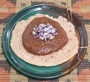

|
Shiro WatAfrica: Ethiopia, Eritrea - Shiro Wat | ||||
| Serves: Effort: Sched: DoAhead: |
4 side ** 55 min Yes |
A very popular "stew" in Ethiopia, made in several variations and used in various ways, for side dish, main dish, or soup. See also Comments. | |||
|
1/2 3 3 1 3 3 1/2 ar 1/2 ------- ar |
c oz cl t c T t T --- |
Shiro Powder (1) Onion, red (2) Garlic Ginger root Water, Hot Oil Salt Berbere Spice (3) Niter Kebbeh (4) -- Garnish Diced Onion |
Do Ahead - (15 min)
|